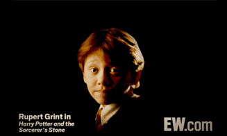

|  |
론 위즐리(루퍼트 그린트)
해리 포터 시리즈 등장인물.
로널드 빌리어스 위즐리.
위즐리 일가의 막내아들.
생일은 1980년 3월 1일이다.
헤르미온느와 함께 해리 포터의 베스트 프렌드.
정말 우연히 해리와 호그와트 기숙사행 열차에서 같이 앉았던 것을 계기로 우정을 키워나간다.
순수혈통인 위즐리 가 태생이라 마법사 세계에 대해 아는 것이 많아
마법사 사회와 떨어져 살았었던 해리와 머글 태생인 헤르미온느에게 둘이 몰랐던 것들을 알려주고 머글 사회에 대해서도 많이 배운다.
마르고 큰 키와 주근깨, 빨간 머리카락이 특징. 눈동자는 파란색.
성격과 능력은 모두 지극히 평범하며 잘난 형제가 너무 많다보니 집안에서도 큰 기대를 받지 못하고 자랐다.
그러나 그의 가장 뛰어난 특기는 체스 실력. 세계관 내에서는 아무도 론을 체스로 이길 수 없을 정도다.
이 탁월한 체스 실력과 용기, 우정으로 맥고나걸 교수의 살아 움직이는 체스 스테이지를 격파하기도 했다.
|
|
헤르미온느 그레인저(엠마 왓슨)
해리 포터 시리즈 등장인물.
헤르미온느 진 그레인저.
생일은 1979년 9월 19일이다.
해리 포터의 가장 친한 친구 중 하나이자 시리즈 내내 사건을 해결해 나가는 삼총사의 일원이다.
가벼우면서 약간 다혈질적인 론 위즐리와는 자주 싸우고 티격태격하는 사이다.
잘난 척이 심해서 다른 학생들과 사이가 좋지 않은 적도 많고 상당히 깐깐한 성격이긴 하지만,
기본적으로 남을 챙겨주길 좋아하는 성격이기 때문에 다른 학생들에게 놀림을 받는 네빌 롱바텀이나
루나 러브굿 같은 학생들을 잘 보살펴준다.
론과 해리와 달리 헤르미온느는 머글 출신 마법사이지만 뛰어난 모범생이다.
우수한 지능과 학구적인 태도로 미네르바 맥고나걸 교수를 포함한 많은 교수들에게 인정 받는 우등생.
웬만한 순수혈통들보다도 마법 역사와 마법에 대해 아는 게 많아,
사건 해결에 가장 근접하거나 도움을 주는 일이 많은 유능한 캐릭터다.
|